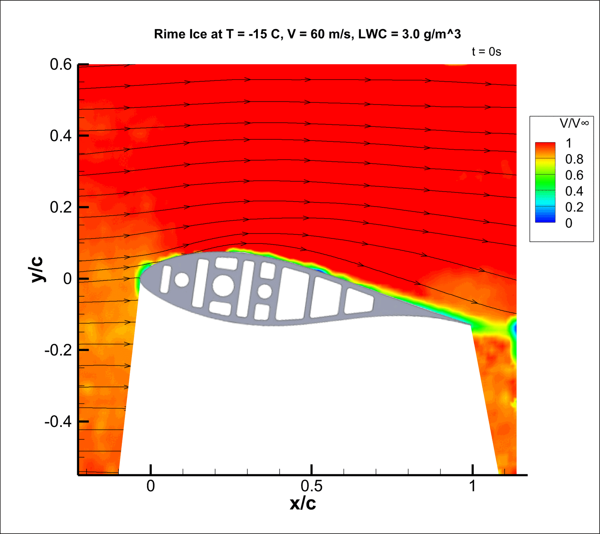
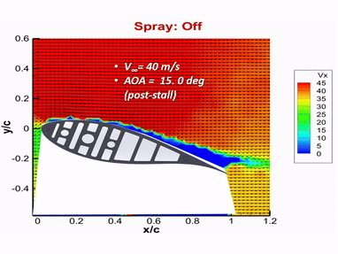
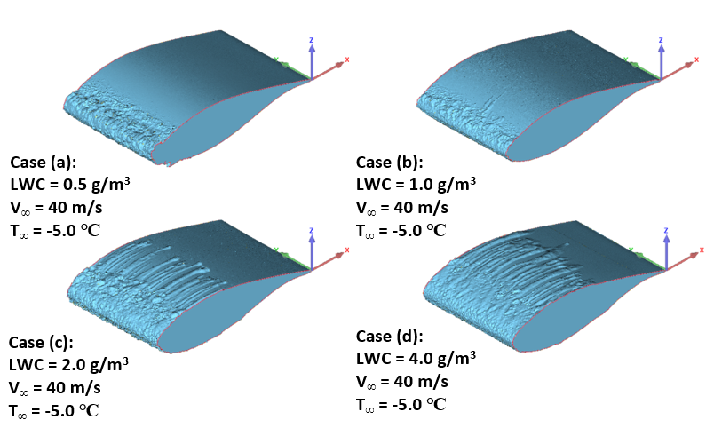

|
Harsha Sista I am a final year PhD candidate at the Department of Aerospace Engineering in Iowa State University in College Park. I work at the Advanced Flow Diagnostics and Experimental Aerodynamics Laboratory, under the supervison of Dr. Hui Hu. My research is at the confluence of Experimental Aerodynamics and Wind Energy, aimed at understanding the fundamental physics behind Offshore Wind Turbines in Extreme Climates such as heavy rainfall and ice accretion. I have also completed an internship at Nextera Energy to obtain an industrial perspective on Wind Turbine Icing. I focus on using Experimental Diagnostic Techniques such as Particle Image Velocimetry (PIV), high-speed imaging, Digital Image Projection (DIP), and load cell measurements, among others, to develop novel strategies to maximize functionality and power prodcution in extreme climates. I have experience in designing experiments for and operating various wind tunnels, including the unique Icing Research Tunnel at Iowa State. I have also worked with a vareity of surface coatings for icing mitigation and rain erosion, both in the laboratory, and as part of my internship and co-op at Nextera Energy. Before starting my PhD, I had the pleasure of completing my undergraduate thesis at the Rotorcraft Aerodynamics Laboratory, at Politecnico di Milano under the guidance of Prof. Luigi Vigevano. I completed my undergraduate studies from BITS Pilani, India and majored in Mechanical Engineering. I am actively looking for full-time postdoc/industry opportunities starting from Summer/Fall 2025. Email / CV / Google Scholar / LinkedIn / |
|
Recent News
|
Selected Research ProjectsI focus on using Experimental Diagnostic Techniques such as Particle Image Velocimetry (PIV), high-speed imaging, Digital Image Projection (DIP), and load cell measurements, among others, to develop novel strategies to maximize functionality and power prodcution in extreme climates. I have experience in designing experiments for and operating various wind tunnels, including the unique Icing Research Tunnel at Iowa State. I have also worked with a vareity of surface coatings for icing mitigation and rain erosion, both in the laboratory, and as part of my internship and co-op at Nextera Energy. |
|

|
Experimental Investigation of Aerodynamic Performance Degradation due to ice accretion on the tip section of an Offshore Wind Turbine Blade
Harsha Sista, Jincheng Wang, Anvesh Dhulipalla, Haiyang Hu, Hui Hu AIAA SciTech Forum and Exposition, 2025 Understanding the ice accretion mechanics at the tip region of an offshore wind turbine, with higher moisture levels and faster tip speeds. PIV is used to understand the instantaneous flow field around the airfoil model, and force measurement techniques are used to quantify the aerodynamic performance degradation in terms of lift and drag. |
|

|
An Experimental Study on Detrimental Effects of Rainfall on Wind Turbine Blades
Harsha Sista, Anvesh Dhulipalla, Amrit Kumar, Haiyang Hu, Hui Hu AIAA Aviation Forum and ASCEND, 2024 Using PIV to understand the instantaneous flow field around a wind turbine airfoil in heavy rainfall conditions, and force measurement techniques to quantify the aerodynamic performance degradation. |

|
An Experimental Study to Characterize the Effects of Ice Accretion on the Aerodynamic Performance of an Offshore Wind Turbine Blade Model.
Harsha Sista, Jincheng Wang, Haiyang Hu, Hui Hu AIAA Aviation Forum, 2023 Quantifying the detrimental effects of ice accretion on an offshore wind turbine blade at high Liquid Water Content levels using force measurement techniques and Digital Image Projection. |
|

|
Qualification of Ice Accretion Characteristics on a Wind Turbine Blade Model at High Liquid Water Content Levels Pertinent to Offshore Wind Turbine Icing Phenomena.
Harsha Sista, Haiyang Hu, Linchuan Tian, Hui Hu AIAA Aviation Forum, 2022 Qualitatively understanding the ice accretion process on an offshore wind turbine blade at high Liquid Water Content levels using high-speed imaging and Digital Image Projection. |
|
Awesosme website credits go to this guy. |